Adding another User
Enabling TRIM on your SSD
Encrypting your Home folder
Installation Guide
Installing Linux Lite
Drives & Partitions
- Mounting Drives & Partitions
- Automount Drives & Partitions for all users
- Automount Windows Partitions for all users
- Controlling Access to Mounted Drives - Advanced Users
No USB Boot option in the BIOS?
Preparing your Computer
Removing a User
Resetting your Password
Securely Erasing files Permanently
Setting your Language
Terminal Basics
Writing Linux Lite to DVD on Windows
Writing Linux Lite to USB in Linux and OSX
Writing Linux Lite to USB on Windows
Installation Guide
To install Linux Lite you will need to download the ISO file, then create either a bootable DVD or USB stick from the ISO. To create a bootable DVD, you need to burn the ISO as an "image" to the DVD. Below are listed three free Windows programs that will enable you to do that. If burning to a USB stick, we have also listed a free program that we recommend for doing that in Windows; or a reliable method to create a bootable USB when using a Linux system, or OSX.
Once you have your bootable media created, you may need to access your computer's BIOS settings to set the boot order for booting CD/DVD/USB's first (before the hard drive). Typically there will be one or two special keys that can be pressed during initial power-up of the computer (before an operating system starts booting) that will allow you access to either the BIOS Settings/Startup Menu or a separate Boot Menu. Specific keys vary from one manufacturer to the next, so refer to your user manual if you are not sure how to access the settings.
Writing the Linux Lite ISO to a DVD on Windows
Here is some free DVD burning software for you to select from:
BurnAware Free - http://www.burnaware.com
CDBurnerXP - http://cdburnerxp.se/
ImgBurn - http://www.imgburn.com/
Place a blank DVD in your DVD drive, open up the program, select the ISO file that you want to burn. Choose the lowest burn speed, this will greatly reduce the risk of your burn becoming corrupt as can sometimes happen. A 4x speed is recommended if you have it.
Writing the Linux Lite ISO to USB on Windows
Win32DiskImager allows you to create a bootable Live USB drive. Download it from here.
(Internet connection required to view video)
Writing the Linux Lite ISO to USB in Linux and OSX
To find out the letter of your USB stick, open a terminal and type: df -h It is usually listed as media or similar. Be very careful to make sure you choose the right drive letter, as you can see in the Filesystem column, my device is sdb another clue is the value in the Size column, here it is shown as 15G. In this example my device is listed as:
/media/jerry/9CB5-8A70
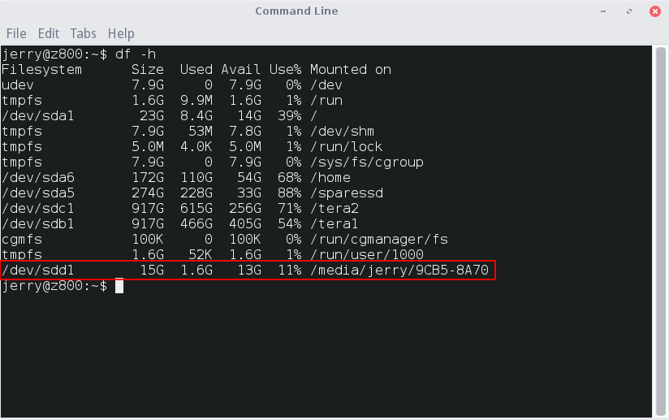
Open a folder and make sure you are in the directory that the iso file is in. Open a terminal in that directory and type the following:
32bit:
sudo dd if=linux-lite-3.4-32bit.iso of=/dev/sdx bs=4M64bit:
sudo dd if=linux-lite-3.4-64bit.iso of=/dev/sdx bs=4MChange the x in sdx to match the letter of your USB device. In the above example, my device is shown as sdd1 (leave out the '1')
Example
sudo dd if=linux-lite-3.4-32bit.iso of=/dev/sdd bs=4MThe Live DVD/USB image will boot into the desktop automatically, there is no need to login manually.
No USB Boot option in the BIOS? Use PloP
For full instructions click here.
Preparing your Computer for the Installation
If you are planning to have Linux Lite as the sole operating system on your computer, there is nothing special you need to do in preparation for the installation, even if another operating system is currently occupying the hard drive. Simply boot up your live installation disk, give Linux Lite a test run if you'd like, then start the installation by double-clicking the Install Linux Lite icon on the desktop. When you get to the Installation Type screen, tell the installer to use the whole disk and it will go ahead and erase anything that is already there, create the partitions needed, format them and install the system automatically.
If you currently have one physical hard drive and want to dual-boot Windows and Linux Lite, then you should do a few things to prepare for the installation to insure the best results.
- Create backup copies of any important data files. (You probably won't need them - but if you do, you'll be glad you made the backups.)
- Create Windows recovery disk(s) if you haven't already done so before.
- Defragment your largest Windows partition (likely the "C: drive"). If Windows partitions currently span the entire hard drive, one (or more) of its partitions will need to be shrunk down to make room for the Linux installation.
- Shrink the Windows partition from within Windows disk management. (You can shrink the partition during the installation, but it is probably best to use Windows to shrink Windows partitions.)
- If you defragmented and shrunk the Windows partition ahead of time, leave the resulting space as unpartitioned, unused, free space. DO NOT create any new partitions from within Windows for the Linux Lite installation. (If you are familiar with partitioning and want to create the partitions ahead of time, use GParted for doing that while booted in the live Linux Lite DVD/USB.)
- If you plan to have the shrinking done by the installer, it is still recommended that you defragment the Windows partition ahead of time.
If you have more than one physical hard drive and want to dual-boot Windows and Linux Lite, with Linux Lite on its own dedicated physical drive, then we recommend you make a request for guidance in our Forum if you are unfamiliar with Linux based installations. Otherwise, general instructions for such an installation are listed below.
- Choose "Something else" on the "Installation Type" screen during installation. (See instructions in following section for pictures of installation stages.)
- On the following page, choose the specific drive that you want for Linux Lite.
- Create your partitions, choose appropriate file system types, and designate mount points.
- Near bottom of the window, select a drive for the boot loader installation. (That will be something like /dev/sda, /dev/sdb, etc. - without a partition # after it. Not /dev/sda1, for instance.) It will be pre-filled for the MBR of the first hard drive.
- If Windows is on the first drive, it's boot loader will be replaced with the Linux boot loader (grub2) unless you specify a different drive. That is fine, but an alternative is to install the boot loader to the Linux hard drive, then set the BIOS to boot from that drive. That will preserve the Windows boot loader on its own drive.
- Once installation is complete, reboot and the Linux boot loader will have automatically detected your Windows installation and added it to the boot menu choices.
Installing Linux Lite to your computer
Start your computer, and go into your system BIOS and check that the boot order is set so that DVD and USB devices are set to boot first. This varies from BIOS to BIOS. Refer to your motherboard documentation for more information.
Once you are happy with your BIOS set up, insert the DVD disc or USB stick into your computer and reboot your computer. You'll be greeted with the following screen. Let the timer run down if you want to boot to the Live session.
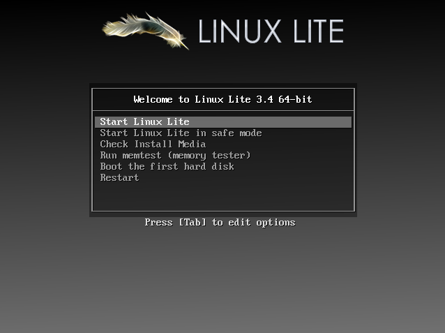
Make sure Start Linux Lite is highlighted, press the enter key to boot the Live session. This is also a good way to check that all of your hardware is supported. If you are having trouble booting and you get just a black screen, try the second option, Start Linux Lite in safe mode.
The other options are:
Check Install Media - run this to check that the Linux Lite image is free from errors.
Run memtest (memory tester) - Test your computer memory for faults.
Boot the first hard disk - boot the existing operating system.
Restart - reboot your computer.
NOTE: If you are having any trouble booting Linux Lite after installation, please read through this trouble shooting guide.
The computer will go through the boot up process, this may take anywhere from a few seconds to a couple of minutes depending on your hardware. The login for the Live user is automatic, there is no need to login. If for some reason you need to login, simply type in linux beneath Other and click on Log In (no password required).
Before we proceed, make sure you have an internet connection first. Click here if you need help to get online before you install Linux Lite.
Once you've had a look around Linux Lite and are ready to install the first step is to double click on the Install Linux Lite icon on your Desktop.
The installer will then open on the desktop and display the Welcome section of the installer. From here you will select your preferred language and view release notes for this version of Linux Lite.
After selecting continue, you are presented with some requirements for the installation. Ensure that these requirements are met by viewing a check mark beside them. You may also choose to download any available updates while installing or install third-party software during the installation.
NOTE: Generally we don't recommend ticking 'Download updates while installing Linux' as this will significantly slow down the install process. Updating after a fresh install is recommended and will save you time in the long run. A typical install on today's hardware will take around 10-15 minutes. If you check these 2 boxes, the install could take over an hour or longer.
NOTE: 'Install third-party software for graphics and Wi-Fi hardware, Flash, MP3 and other media' Please verify the legal status of the use of the third party software in your country/territory before choosing this option. This option will install codecs for playing media files, and proprietary drivers for some of your hardware. It is a legal requirement for us to inform you of this.
Now it is time to choose the method of installing Linux Lite to your hard disk. You will have several options during this phase of the installer.
Install Linux alongside (Operating System) - otherwise known as a dual boot. An option to boot from Windows, another Linux based operating system or Linux Lite when your computer starts.
Note: If you want to encrypt your home folder, do not select the option 'Encrypt the new Linux installation for security' instead, please follow these instructions here.
It is not recommended to choose Encrypt the new Linux installation for security unless you are well versed in this method. The same goes for Use LVM with the new Linux installation. For the purpose of this tutorial, we are keeping it simple.
Erase Disk and Install Linux
Upon selecting Erase Disk, the installer will automatically select the default partitioning scheme. Click on Continue to accept the changes.
NOTE: This installation option will automatically install the Linux bootloader to the first hard drive on the system. That is typically how most people install and the Linux boot loader offers the choice of booting any other operating systems that are on your computer. However, if your intent is to keep the Windows boot loader in charge of booting the Windows drive and the Windows drive is the first one, then you need to use the "Something else" installation type. That way you can control the "location for boot loader installation" and set it for the specific drive you choose for Linux Lite. Again, this is not a necessity when dual-booting. We point this out only because some people prefer to keep the Windows drive as is.
Install Linux alongside Windows (dual booting)
If you have selected to install Linux Lite alongside an existing copy of Windows, you will be greeted with a screen representing the two operating systems on the disk. You may choose the disk to install Linux Lite to from the top menu labeled: Select Drive. In the main part of the window you will see your hard disk split into two sections, one containing your Windows install and one for your proposed Linux Lite installation. You may drag the empty space between them to allocate space from one to the other as needed. You may then select Install Now after you have made the desired changes. If your computer has more than one physical hard drive and your intent is to install Linux to a separate drive from the Windows drive, see this section.
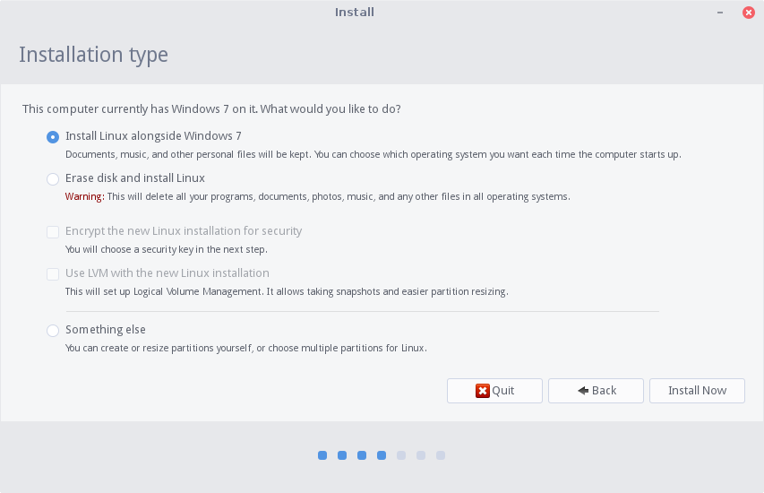
Something Else
NOTE: FOR ADVANCED USERS ONLY
If the other methods do not fulfill your personal requirements for installation you may select Something Else and manually partition your hard disk. There are many options available from this screen. All of your disks will be visible in a hierarchal tree view in the main window. From here you can see disk devices, existing partitions, and unallocated space. If your disk is new or you are creating a new install in a virtual machine you may need to select New Partition Table from the options below. This will erase the disk and provide you with a clean slate. WARNING: This will destroy any data on the disk selected! Another option is to add a partition to the disk by selecting Add from the button options. This option requires that there exists free space on the disk with which to create the partition. When adding a partition, you may select the place on the disk to create the partition, the partition size, the filesystem type, and the point in the filesystem that this partition will be mounted. If you need to modify these attributes of a partition, you may select Change from the button options. If there exists partitions that you wish to be rid of, you can select Delete from the button options to delete the partition. If you wish to return everything back to its original state you may use the Revert button. NOTE: This will only work if you have not written changes to the disk.
Under the partitioner there is a menu for selecting the location of the boot loader's installation. You may select a drive's MBR, indicated by the device name e.g. /dev/sda, or you may select a partition to install the boot loader to. The safest option is to install the bootloader to the MBR of the first disk as the bootloader will intelligently add entries for installations of Windows and other Linux installs.
NOTE: If you have any NTFS drives, it is important to give these a mount point during the install. That way they will be easily accessible after the installation.
The mount point is simply "where" in the file system you want that partition's files to show up. You can name the mount point what ever you want, be sure to give it a simple, no spaces lowercase name like eg. /myntfs do not use /My NTFS.
Where are you?
After completing the partitioning phase of the installation, you are prompted to set up some personal details about the system. The installer will continue to work in the background while you are filling out this information. The first step is to select your time zone. The installer may detect your time zone based on your location via your ISP's information. If not, you may select your time zone by either clicking on your region on the supplied map or by typing in your area in the box below.
Keyboard layout
The next step is to select your keyboard language and layout. You may select the language that your keyboard corresponds to on the left and any specialized layout on the right. This is the point where you may select to enable international keys on your keyboard. Though, these options may be changed later. We recommend you leave the default English (US) options here, and adjust your language settings once Linux Lite has been installed and you have rebooted for the first time.

Who are you?
On the next screen, you are greeted by several fields to fill. These fields include:
Your name - your personal name.
Your computer's name - the name that you wish to use to identify the computer on your network.
Pick a username - your user name that is used to login to the system.
Choose a password - your password that you wish to use for your user and sudo (administrator) password.
Confirm your password - enter the above password again.
NOTE: Choose a strong password, a mix of upper and lower case as well as a mix of numbers and characters. An example of this would be: y%9L2x#o would be considered a strong password. Use a program like Keepassx to keep all your passwords safely stored and NEVER use the same password for different websites. (Keepassx is available for installation from Menu, System, Install/Remove Software. You do not need to download it from their website.)
NEVER COMPROMISE YOUR SECURITY FOR CONVENIENCE.
There are also options to enable auto-login for your user or have the computer prompt you for a password everytime you login.
Note: If you want to encrypt your home folder, do not select the option 'Encrypt my home folder' instead, please follow these instructions here.
If you have a webcam, you may encounter a screen during the install asking to Take a photo this feature is supported so that when you first log in, your photo will be displayed as your avatar. If you skip this step, you can use a .png photo of yourself, rename it to .face and place it in your /home/user folder. By default, the Linux Lite logo will represent your login icon.
After finishing all of these steps you will be greeted with a slideshow detailing all of the features and software that are included in this version of Linux Lite. You may allow them to play on their own or navigate through them using the arrow buttons on the sides of the window (the picture below may vary from version to version).
Once the installation is complete you will be prompted to either restart your computer and begin using your newly installed Linux Lite system or to continue using the testing environment on the DVD/USB that you are using. If for some reason your computer hangs on restart, press F4 or Enter.
After a reboot you will be greeted by the login screen:
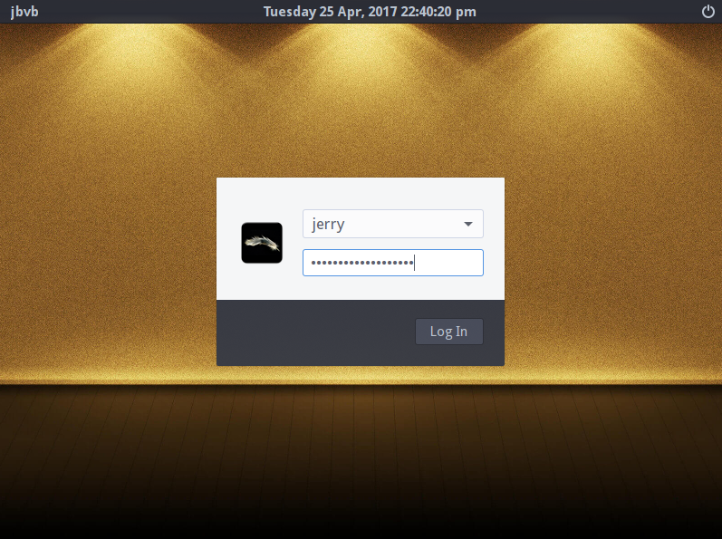
After you have logged in you will see the desktop and Welcome window. Be sure to read through the Welcome window to get you off to the best possible start to using Linux Lite. Be sure to Install Updates first, followed by a check to Install Drivers.
Congratulations! Now that we've installed Linux Lite, lets take a look at what's available on the Menu by clicking here.
Encrypting your Home folder
After a new installation of Linux Lite, you have the option of encrypting your home folder for added security. You won't be able to encrypt your home folder while you are logged in. So we're going to add a temporary user then when we are finished, we'll delete that user.
1. Click on Menu, Settings, User Manager. Click on New User and add the user tempuser with a password of your choosing. Make sure you tick the sudo box on the right and click on Apply before closing out User Manager.
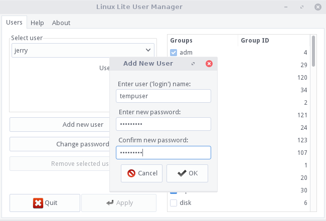

2. Now logout, and login with the user tempuser.
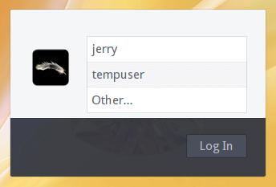
3. Open a terminal and enter the following command to encrypt your home directory, replacing user with the name of your user account:
sudo ecryptfs-migrate-home -u user
4. When this has finished (time to encrypt may vary) you must logout of tempuser and login as your user. DO NOT Reboot.
5. Once logged in as your user, open a terminal and type in:
ecryptfs-add-passphraseand enter your login password.
6. To check that you have successfully created a passphrase, enter the command:
ecryptfs-unwrap-passphrase7. Clean up time. Open a terminal and enter the following commands:
sudo userdel tempuser
sudo rm -rf /home/tempuser/
sudo rm -rf /home/yourusername.3redf/When you do the last command, type a dot '.' after your username and press the tab key to complete the directory name.
Note: Be extremely careful when doing this last command, you run the risk of deleting your home folder if you do not follow these instructions to the letter.
Your home folder should now be encrypted. To test, insert a live linux operating system cd/usb and reboot. Once you are in the live desktop, you shouldn't be able to browse your encrypted home folder.
Securely Erasing files Permanently
The following tutorial explains how to set up and securely erase files on Linux Lite. This method will ensure that even with data recovery software, files will be irretrievable.
1. Open your home folder, go to: Edit, Configure custom actions...
2. Click the + symbol in the top right, and enter the following details as shown in the picture below on the Basic tab:
(the icon chosen here is 'emblem-important' from 'All Icons')
3. In the Appearance Conditions tab, select the following:

Click on Ok and Close when finished.
Now when you want to permanently and securely erase a file from your computer without the chance of recovery, right click on that file and select Shred file...
Setting your Language
Here's how to set a language system wide following an install of Linux Lite.
1. Click on Menu, Settings, Language Support.
2. You will get a dialog box pop up, click on Remind Me Later.
3. Now click on the button Install / Remove Languages.
4. In this example, we'll install the Portuguese language. Scroll down, find your language and tick the box next to it, then click on Apply.
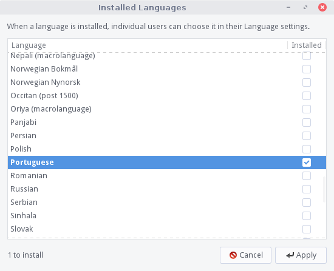
You'll then be prompted for your password.
After you've entered your password, your computer will begin to download all the language files, this may take a while.
6. Once that is done, scroll to the bottom of the Language for menus and windows box and drag your newly installed language to the top of the list. Then click on Apply System-Wide, you'll be prompted for your password again. Now wait for the settings to be applied, it will take a few moments.
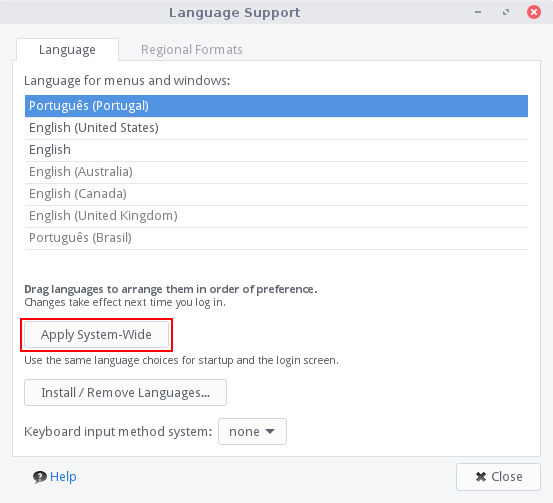
7. Now click on the Regional Formats tab, select the language you just installed, and click on Apply System-Wide.
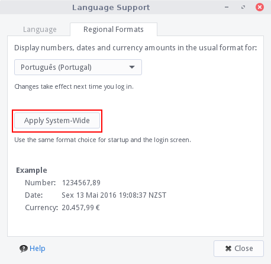
8. Now logout and login again and you will see that your new language has been applied.
Please note that not all programs may not have your language applied. If this is the case, search for that program in Install/Remove Software and see if there is a language pack available for it. Also note that after you have changed your language, some of the Menu items may not be translated properly. There is little we can do about this, an easy way to rename Menu entries is by going to Menu, Settings, Main Menu and editing the entries there.
Enabling TRIM on your SSD
Enabling trim on your SSD will significantly increase its life span. Here's how to do it on Linux Lite.
CAUTION: You MUST edit the following file with great care, a misplaced comma, a gap that shouldn't be there or a missing line will cause you computer to not boot. Take your time and triple check this file for accuracy before saving it.
Open a terminal and do:
sudo cp /etc/fstab /etc/fstab_bak-notrimWhen that has finished, in the same terminal do:
sudo leafpad /etc/fstaba file will open that will look similar to this:
Look for every line that contains the word ext4.
At the start on the next block of information, place the characters noatime, (don't forget the comma) in front.
Do not enable Trim on the swap line.
Do not place noatime, on partitions or drives that are not on the SSD, eg. IDE or regular hard drives.

Now save and close the file.
Now open a terminal and do:
sudo leafpad /etc/rc.localAbove the line exit 0 in that file, add the TRIM command fstrim -v for every EXT4 partition from your fstab file.
Copy the text below and edit it to match your set up. We include the creation of a log for you so you can check if trim is performed during boot up. The log is in /var/log/trim.log
| #!/bin/sh -e # # rc.local # # This script is executed at the end of each multiuser runlevel. # Make sure that the script will "exit 0" on success or any other # value on error. # # In order to enable or disable this script just change the execution # bits. # # By default this script does nothing. LOG=/var/log/trim.log echo “*** $(date -R) ***” >> $LOG fstrim -v /boot >> $LOG fstrim -v / >> $LOG fstrim -v /home >> $LOG echo " " >> $LOG exit 0 |
We now need to disable the weekly cron job for Trim. Open a terminal and do:
sudo mv -v /etc/cron.weekly/fstrim /fstrimTrim is now enabled and will run on each boot.
Drives & Partitions
Let's familiarize with the terms drive, partitions and volumes. They are commonly used terms and understanding what they are will help you in the process of mounting drives/partitions.
The term drive refers to a physical storage device such as a hard disk, solid-state disk, removable USB flash drive etc. In Linux, devices are represented by special file system objects called device nodes, which are visible under the /dev directory.
Storage devices are labeled under /dev according to the type of device, followed by a letter signifying the order in which they were detected by the system. In Linux the prefix sd is used for all PATA, SATA and SCSI devices. For instance, the device files /dev/sda, /dev/sdb and /dev/sdc correspond to the first, second and third device (drive) respectively.
A physical storage device (drive) can be divided into multiple logical storage units known as partitions. Each partition will show up under /dev as a separate device node. A number after the device letter signifies the number of the partion. For example, the device node files /dev/sda1 and /dev/sda2 refer to the first and second partition of the first device (drive). Note that on PCs using MBR partitioning, due to the limit of four primary paritions and the way extended partitions are handled the partition numbering can slightly differ from the actual partition count.
The term volume in Linux is related to the Logical Volume Manager (LVM), which can be used to manage mass storage devices. A physical volume is a storage device or partition. A logical volume created by the LVM is a logical storage device which can span multiple physical volumes.
Mounting Drives & Partitions
Mounting drives and partitions in Linux Lite is easy. While the following approach is generally acceptable, it imposes some limitations in the way a drive can be used in your system. For instance, the drive will remain mounted as long as the computer is not restarted or the drive is not manually unmounted. You will need to mount the drive after each reboot. Also, as administrator, you can read and write to the drive but no other user will be able to write to the drive or read any of its content. Read on Automount Drives & Partitions for all users section for other options.
By default, all drives connected to your computer will show up on the Desktop as well as in Thunar File Manager, as long as the drive in question contains at least one partition.
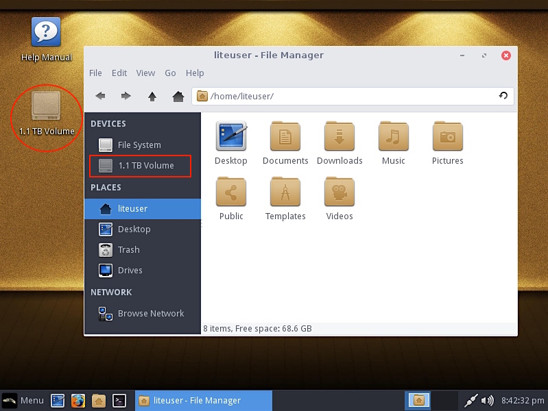
As you may have noticed in the screenshot above, the drive shown is grayed-out, meaning that it is not mounted by default. To mount a drive in Linux Lite, double click the desired drive and type the administrator password when prompted to do so. Mounting drives requires administrative privileges.
Once mounted, the drive icon reflects just that (not longer grayed-out)... you are now ready to use the drive.
Automount Drives & Partitions for all users
A more user-friendly way to mount drives in Linux Lite is to have them automount at startup and allow all users to read and write to the drive.
The instructions below shows how to mount a drive in Linux Lite with automount options and read and write permissions for all users. You can follow these steps to mount as many partitions as you may need.
Start by creating a folder to assign a mount point path to the drive. Open Terminal and execute:
sudo mkdir /media/disk1... where disk1 is the name of the folder we are creating and /media is the directory under which it will be created.
Then, open Menu, Settings, Disks. Select the disk you want to make available from the left column, then click on Edit Mount Options as shown below.

Set the following mount option:
- 1- Switch off Automatic Mount Options
- 2- Check Mount at startup
- 3- Mount options: users,noexec,nosuid
- 4- Mount Point: /media/disk1 (the path of the folder you created in the previous step)
- 5- Identify As: /dev/sdb1 (it may be sdb1, sdb2, sdc1 or similar - select from the drop down menu)
- 6- Filesystem: ' auto ' or ' ext4 ' (Linux) or ' ntfs ' (Windows) if you want to be explicit.
Optionally, you could also set a Display Name for your drive, making it easier to identify. The Display Name will be appended to the mount options(3) as you type it.
Click OK to apply your changes and enter your password when prompted to do so.

Finally, you can either reboot your computer or manually mount the device so that you don't have to reboot. The configured drive will mount automatically on every reboot from there on. All users will be able to read and write on the drive and no prompt for administrative password will be required. To manually mount the drive, click on Mount selected partition (little triangle in the Volumes actions buttons):
The selected drive will then be mounted.
Repeat these steps to automount other drives (or additional partitions within a drive) as needed.
Automount Windows Partitions for all users
Linux Lite can read and write NTFS file systems on external drives by default. To mount a Windows partition, create a new folder to assign a mount point path for the Windows partition. Open Terminal and execute:
sudo mkdir /media/disk1... where disk1 is the name of the folder we are creating and /media is the directory under which it will be created. Make sure to create a new folder for each drive you are mounting in your system. For example, assume you are already using /media/disk1 to automount a different drive or partition, you want to have a different folder to assign a mount point path for the Windows partition then; it can be named anything you want: disk2, disk3, windowsdisk, etc. and make sure to adjust the Mount Point options accordingly in the steps below.
Next, open Menu, Settings, Disks, select the disk which contains the Windows partition from the left column, highlight (click) the Windows partition and finally click on Edit Mount Options:
Set the following mount option:
- 1- Switch off Automatic Mount Options
- 2- Check Mount at startup
- 3- Mount options: defaults
- 4- Mount Point: /media/disk1 (the path of the folder you previously created)
- 5- Identify As: /dev/sdb3 (it may be sdb2, sdb3, sdc2 or similar - select it from the drop down menu)
- 6- Filesystem: ' auto ' or ' ntfs ' (Windows) if you want to be explicit.
Click OK to apply your changes and enter your password when prompted to do so.
Finally, you can either reboot your computer or manually mount the device so that you don't have to reboot. The configured drive will mount automatically on every reboot from there on. All users will be able to read and write on the drive and no prompt for administrative password will be required. To manually mount the drive, click on Mount selected partition (little triangle in the Volumes actions buttons):
The selected drive will then be mounted.
Repeat these steps to automount other drives (or additional partitions within a drive) as needed.
Controlling Access to Mounted Drives
Usually, you want to mount drives in Linux Lite and make them available to all users. But there are times when controlling access to those drives becomes a necessity. For example, you may want to automount a Windows drive at startup but prevent other users from modifying the contents in that drive; which is certainly important. Maybe you do not want them to see its content at all. There is a simple (yet effective) way for accomplishing just that at the time of mounting drives and partitions; by using uid, gid and umask.
A user ID (uid) is a unique positive integer assigned by Linux operating system to each user. Each user is identified to the system by its uid, and user names are generally used only as an interface for humans. The same is true for gid (group ID) but it references groups instead of users.
The user file-mode creation mask (umask) is use to determine the file permission for newly created files. It can be used to control the default file permission.
Let's put together some examples on how we could set some restrictions at the time of mounting drives.
First, we need to know the uid/gid of the administrative account we are using to mount the drive. In this example, our username is liteuser. Open Terminal and execute:
id -u username
id -g username... where username is your administrator account username; liteuser in our case.
For umask, we are going to go with the most common options you'll usually need:
umask 222 - Assigns permissions so that everyone has read-only access for files and directories, including your account.
umask 077 - Assigns permissions so that only you have read/write access for files, and read/write/search for directories you own. All others have no access permissions to your files or directories.
umask 022 - Assigns permissions so that only you have read/write access for files, and read/write/search for directories you own. All others have read access only to your files, and read/search access to your directories.
umask 002 - Assigns permissions so that only you and members of your group have read/write access to files, and read/write/search access to directories you own. All others have read access only to your files, and read/search to your directories.
Using Menu, Settings, Disks, mount a drive with some content in it using your uid, gid and umask=077:
With the above mount options, this is what liteuser and user1 accounts get to access.
Feel free to experiment with umask options, different groups and users. For additional references, see man mount and man umask.
Adding another User
To add another User to Linux Lite, click on Menu, Settings, Lite User Manager. Then click on Add New User and enter a name, and the same password twice.
NOTE: Choose a strong password, a mix of upper and lower case as well as a mix of numbers and characters. An example of this would be:
y%9L2x#owould be considered a strong password. Use a program like Keepassx to keep all your passwords safely stored and NEVER use the same password for different websites and accounts.
Never compromise your security for convenience.

You will then be asked for your password, enter it and click on Ok to finish creating the new user account. The new user will have the same rights as the default user (you) except for Administrator rights meaning they will be unable to modify system settings such as installing software and changing system files.
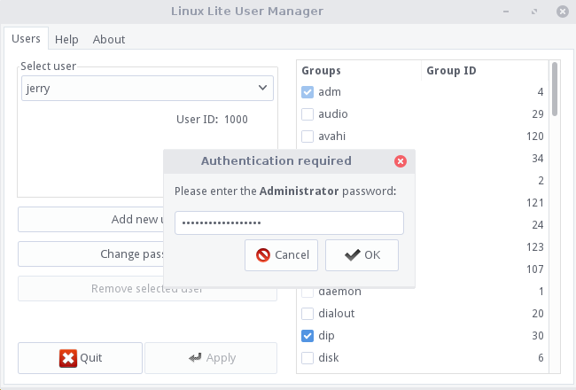
If you want your new user to have Administrator rights, in the right hand pane scroll down to sudo, place a tick in the box beside it and click on Apply. You can give the new user other group permissions to by using this method, but out of the box this should not be necessary as by default, the application already does all this for you. Now when the new user next logs in, they will have the same full system rights as you. You will both be 'Administrators'.
Removing a User
NOTE: Before removing a user account make sure their files are backed up to a usb device or the cloud first. Removing an account also removes all that persons documents, pictures, videos, files etc.
This is as easy as selecting the user that you want to remove from the Select user drop down box, clicking on Remove selected user and clicking on Apply. If you are asked for your password, please enter it and then click Ok. Next a confirmation box will appear, read the message and if you want to proceed click on Yes. The user account and all their data has now been removed.
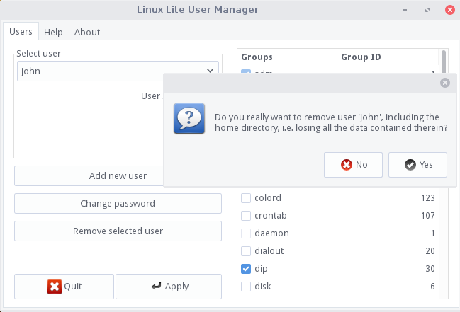
Resetting your Password
Forgot your password? It happens to all of us at some stage. Fortunately setting it again is fairly straight forward. Lets begin.
Boot up your computer and immediately press and hold down the Shift key. You should see a screen like this.
Next press the e key whilst that top line is highlighted. This will take you to the next screen. Use your arrow keys to move down to the line highlighted in the picture below. Use the arrow key until you reach the end of that line.
Press the backspace key repeatedly until you remove: ro splash quiet $vt_handoff and replace that text with: rw init=/bin/bash so that it looks like the picture below.
Now press either F10 or Ctrl+X to boot your machine to a command prompt.
At the prompt, type: passwd jerry where jerry is your username, then press enter.
You will be asked to type in a new password twice.
Your password has now been changed. Now we are ready to save those changes, then reboot the computer.Type in: sync then hit enter. Then type in: reboot -f
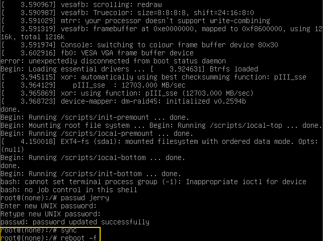
Your computer will reboot. If you see the screen shown below again, just hit enter. This is normal and won't appear the next time you reboot your computer. You may also not see the boot animation on this boot, this to is normal and will reappear next time you boot up.
Now login with your password.
Terminal Basics
Linux Lite is designed to be such that new users won't have to venture into the terminal to much. But, there will be some occasions where we need to run the odd terminal command. The following is a very basic introduction to some of the more common terminal commands that will help you to navigate around your computer, should you need to.
TIP: instead of typing out the entire name of a file or folder, type the first few letters and hit your TAB key, this will auto complete the name. This will save you lots of time but be careful and make sure you have typed the correct file name. In the examples below 'directory' also means 'folder'.
When you first open a terminal, your location in the file system will be your home directory. You can confirm that by using the first command listed below, "pwd". It will show that you are in "/home/username", where "username" is your actual username.
pwd - shows you the present working directory (the directory you are currently in). If you get lost, just type "pwd" and it will tell you where you are in the file system.
ls - display a list of files and directories in the current directory
ls -la - a more comprehensive listing that displays file properties in the current directory, including hidden files and their properties.
cd - change directory, change to another directory. For instance, if you are currently located at /home/username and want to go to your Documents folder, type: cd Documents. If you then type pwd, you will see that your location is now /home/username/Documents.
cd .. - go back one directory (up to parent directory of your current location).
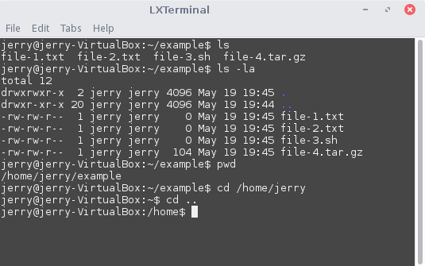
cp - copy file to another directory
rm - remove a file or directory
rm -rf - permanently delete a file or directory
mv - rename a file or directory.
You can also use it to move a file from one location to another eg. mv /home/jerry/file1.doc /home/jerry/Documents
cat - display the contents inside a file
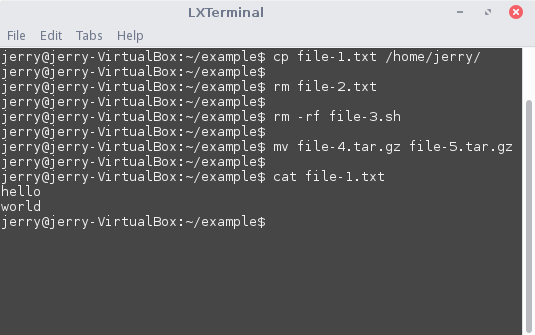
mkdir - make a new folder
rmdir - remove a folder
killall - kill a program with that name
man - read the manual for a particular program (type q to exit the manual)
CopyLeft Linux Command Reference: